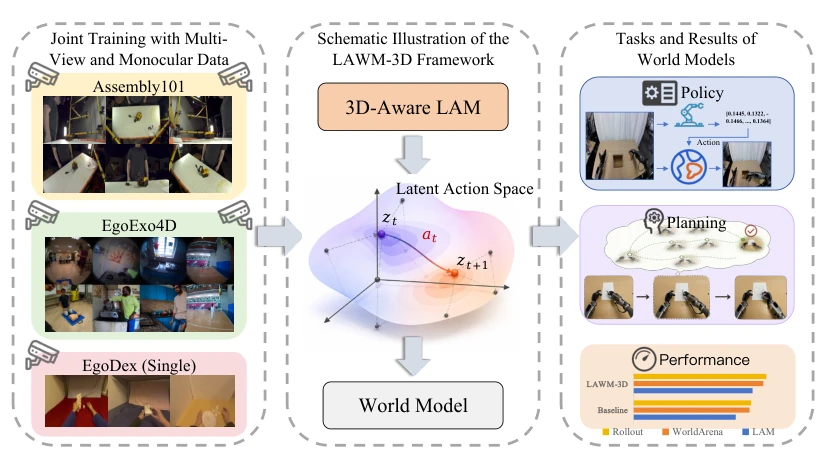
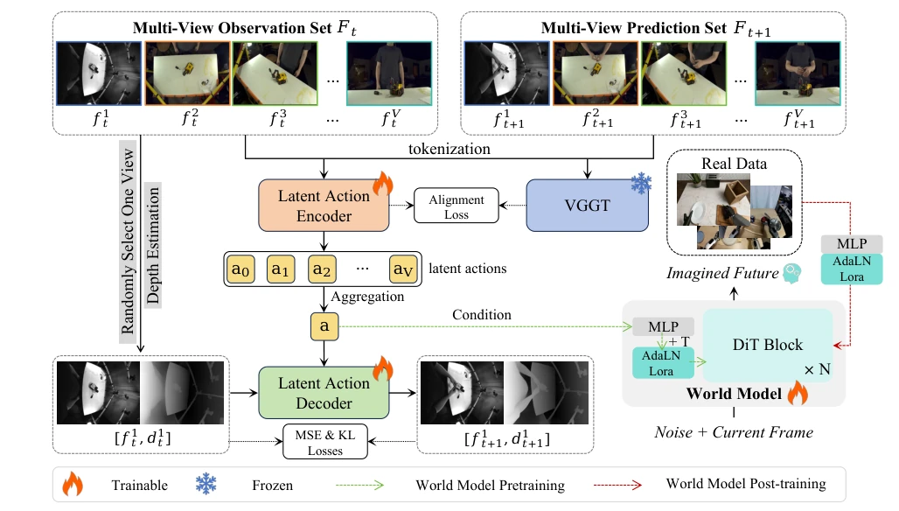
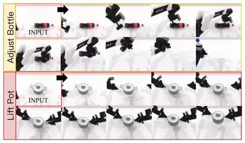
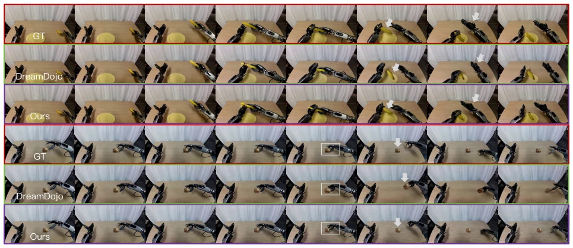
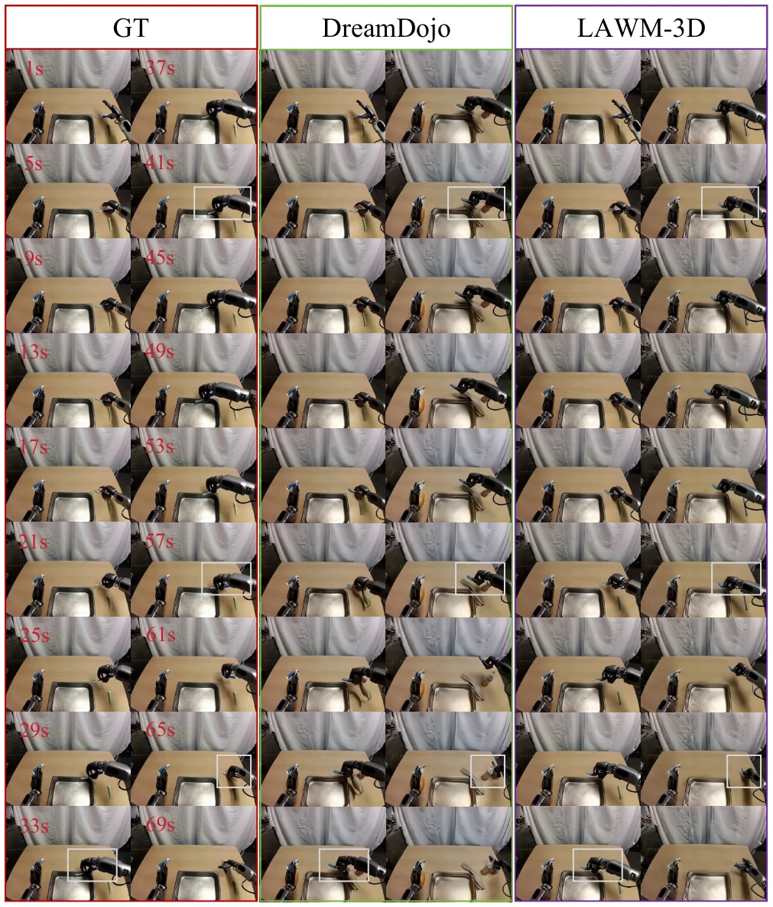
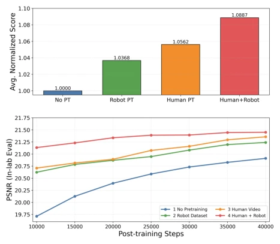
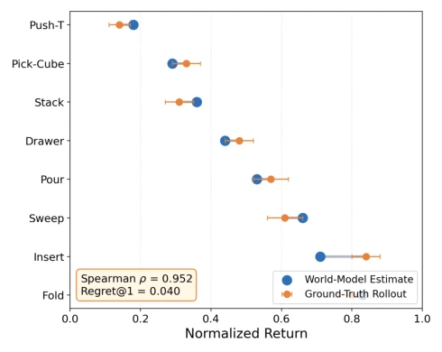
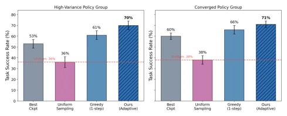
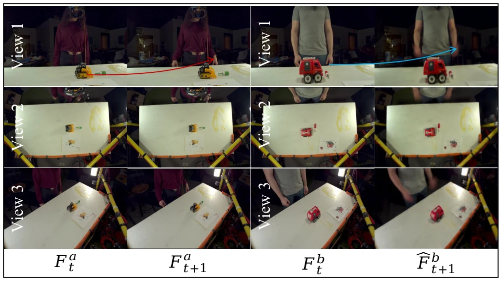

LAWM-3D: Learning 3D-Aware Latent Actions from Human Videos for Generalizable Robot World Models
Jiarui Yang, Jiale Zhange, Jiawei Li, Hang Guo, Wen Huang, Jinpeng Wang abspdf
论文点评Review
这篇论文试图给世界模型注入‘三维灵魂’，听起来很性感，但实际操作中往往容易变成‘伪 3D'。作者敏锐地指出了现有 Latent Action Models (LAMs) 的痛点：它们太依赖像素重建，导致未来帧的 RGB 信息直接泄露到潜在动作里，学出来的动作其实是‘未来画面的压缩版’而非‘运动语义’。LAWM-3D 通过多视图、深度约束和几何对齐，确实让模型在深度预测和物理一致性上有了提升。不过，引入 VGGT 这种重型 3D 基础模型作为对齐目标，推理成本和训练复杂度肯定不低。而且，人类视频到机器人动作的迁移，真的只是换个 latent space 就能解决吗？实验结果虽然亮眼，但 OOD 泛化能力的提升是否完全归功于 3D 感知，还是单纯因为数据量更大，值得打个问号。总的来说，技术扎实，但‘通用性’的宣称仍需更多真实机器人场景的验证，别光在仿真里卷指标。
—
研究动机Motivation
世界模型在具身智能中潜力巨大，但落地难在动作标注贵且平台异构。Latent Action Models (LAMs) 如 DreamDojo (Gao et al. 2026a) 试图用无标签人类视频解决标注问题，但大多基于单视图 2D 像素空间。这导致两个致命伤：一是未来帧外观泄露，编码器直接压缩未来 RGB 而非动作语义；二是多视图简单堆叠无法保证几何一致性，因为缺乏跨视角约束。现有工作如 UniLACT (Govind et al. 2026) 虽引入深度监督，但多为单视图；MVP-LAM (Lee et al. 2026) 依赖合成数据。作者发现，单纯引入多视图视频并不能自动获得 3D 感知，因为像素级重建会忽略几何结构。因此，核心动机是如何从人类视频中提取真正具备 3D 感知能力的潜在动作，以支持机器人世界的泛化预测，而非仅仅模仿外观变化。
—

Figure 1: Overview of LAWM-3D framework. The model learns 3D-aware latent actions through joint training on multi-view and single-view datasets. The learned latent action space enables world model pretraining and supports downstream tasks, achieving superior overall performance compared to the baseline method DreamDojo (Gao et al. 2026a).
方法Method
整体采用两阶段范式：先在大规模人类视频上预训练 LAM，再微调至机器人任务。核心创新有三：1. 多视图不变统一动作 Token 化：通过随机视图掩码和聚合，强制模型学习跨视角一致的动作表示，而非特定视角的像素差异。2. 非注入式 RGB-D 联合重建：解码器同时预测 RGB 和深度，但编码器无法直接访问深度，防止未来帧 RGB 泄露，迫使模型关注几何运动线索。3. 几何表示对齐：利用预训练的 3D 基础模型 VGGT (Wang et al. 2025)，通过余弦相似度和尺度回归损失，将 LAM 编码器中间特征与 VGGT 的几何特征对齐，显式注入跨视角几何先验。训练分三阶段：LAM 提取动作、World Model 预训练、机器人数据微调。这种耦合设计避免了单一模块的局限性，确保潜在动作既包含运动语义又具备 3D 结构。
—

Figure 2: Architecture of the 3D-aware latent action model and world model training pipeline.
Figure 3: Visual comparison of depth prediction on ego-view. Our method demonstrates stronger depth understanding. The third row highlights the accuracy of large-motion prediction.

Figure 4: Qualitative visualization of world model rollouts on robotic manipulation tasks in the WorldArena benchmark.

Figure 5: Comparison of real-world rollouts between ground truth (GT), DreamDojo, and our method on manipulation scenarios. Our method exhibits stronger physical plausibility in object interactions (e.g., interactions with the banana and in the spatial positioning of blocks), demonstrating that 3D-aware latent actions help world models learn real-world physics and 3D spatial structure more effectively.

Figure 9: Comparison of long real-world rollouts between ground truth (GT), DreamDojo, and LAWM-3D on manipulation scenarios. In long-horizon rollouts, our generated videos exhibit higher visual quality. Moreover, as highlighted in the annotated regions, LAWM-3D demonstrates better action following, interaction modeling, and 3D understanding. Compared with the baseline, our method achieves stronger stability and consistency, while avoiding non-faithful errors such as visual artifacts.
其他图片Other Figures

Figure 6: Impact of different pretraining strategies on world model performance. (Top) Average normalized scores across evaluation metrics. (Bottom) PSNR convergence curves dur- ing post-training.

Figure 7: Agreement between imagined returns from the learned world model and real environment performance of candidate policies.

Figure 8: Closed-loop success rates of different policy se- lection strategies under high-variance and converged policy groups. Our adaptive selection consistently improves perfor- mance by exploiting policy diversity.

Figure 10: Cross-view transfer of latent actions, showing that the learned action representation captures view-independent motion dynamics.